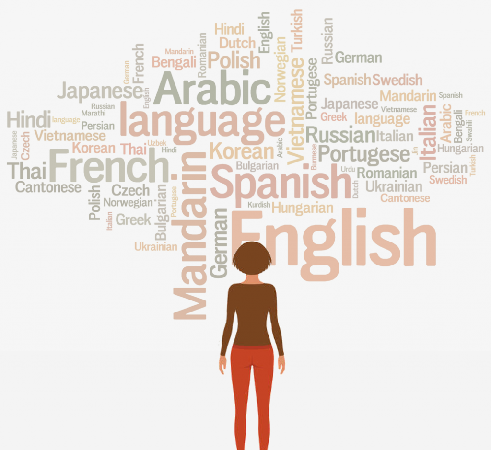
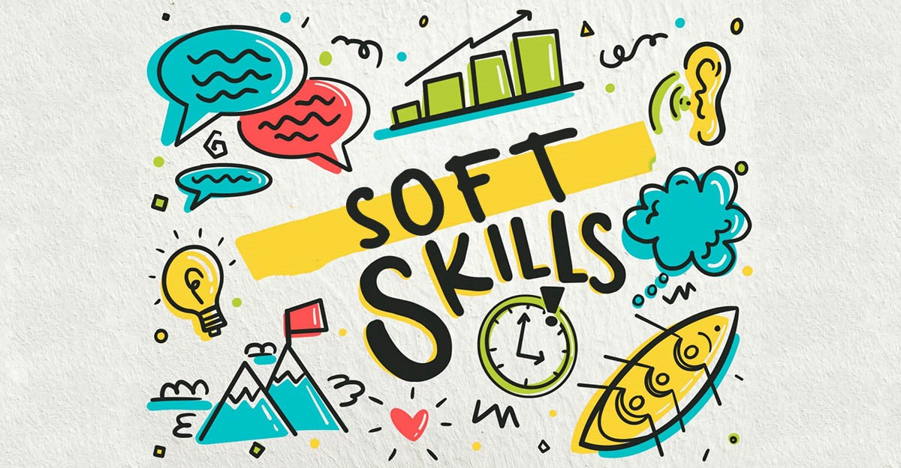

Compétences en informatique

-
Langages de programmation : C, C++, Python, PHP, JavaScript, C#
- La maîtrise des langages de programmation tels que C, C++, Python, PHP, JavaScript et C# a été acquise à la fois grâce aux cours académiques et aux projets personnels.
J'ai suivi des cours dédiés dans ces langages et les ai également pratiqués de manière indépendante pour développer divers projets.
-
Développement web : HTML, CSS, XAML
- J'ai appris le développement web grâce à des cours universitaires et des projets personnels. J'ai acquis une solide compréhension de HTML, CSS et XAML
en les utilisant pour créer des sites web et des interfaces utilisateur interactives.
-
Bases de données : Oracle SQL, Pl/SQL, MySql
- Mes connaissances des bases de données SQL ont été développées pendant le lycée, mes études universitaires et des projets pratiques.
J'ai appris à concevoir, manipuler et interroger des bases de données relationnelles en utilisant SQL.
-
Systèmes d'exploitation : Linux, Windows
- J'ai acquis de l'expérience dans l'utilisation des systèmes d'exploitation Linux et Windows tant dans des environnements académiques que personnels.
J'ai travaillé avec ces systèmes d'exploitation pour effectuer des tâches de développement, de configuration système et d'administration.
-
Méthodologies : Méthodologies Agile
- J'ai été formée aux méthodologies agiles dans le cadre de mes études universitaires et de projets collaboratifs.
J'ai travaillé en équipe en suivant les principes agiles pour planifier, exécuter et livrer des projets de manière itérative et progressive.
-
Outils de contrôle de version : Git, GitLab
- Ma maîtrise de Git et GitLab provient de mon utilisation quotidienne de ces outils pendant mes études et mes projets universitaires.
J'ai appris à gérer efficacement le contrôle de version de mon code source et à contribuer à des dépôts de code partagés.
-
Suites bureautiques : Canva, Microsoft Office (Excel, Word, PowerPoint, Teams ...)
- J'ai acquis des compétences dans l'utilisation de Canva et de la suite Microsoft Office (Excel, Word, PowerPoint, Teams ...) grâce à une utilisation régulière dans mes études et mes projets personnels.
Ces outils me permettent de créer des présentations attrayantes visuellement et des documents professionnels.
Compétences linguistiques

-
Français Niveau C1
- Le français a été appris dès l'âge de 10 ans à l'école, en regardant des séries et des émissions françaises, ainsi qu'en écoutant des podcasts.
En 2021, j'ai passé le DELF B2 avec un score de 85/100. Maintenant, je parle couramment le français.
-
Anglais Niveau B2
- L'anglais a été appris à l'école dès l'âge de 12 ans et amélioré en regardant des séries et des films en anglais.
-
Allemand Niveau A2
- L'allemand a été appris au lycée en tant que matière facultative.
Compétences personnelles

-
Communication
- Les compétences en communication ont été développées lors d'activités de bénévolat et de travail d'équipe sur des projets universitaires.
-
Travail d'équipe
- Le travail d'équipe a été pratiqué lors de projets universitaires, de bénévolat et d'activités parascolaires telles que le scoutisme.
-
Résolution de problèmes
- Les compétences en résolution de problèmes ont été acquises grâce à la réflexion mathématique acquise en première année préparatoire, à la pensée logique et à la formation à la résolution de problèmes complexes en algorithmique et en programmation tout au long de mon parcours académique.
-
Gestion du temps
- La gestion du temps a été affinée grâce à la gestion de multiples responsabilités académiques et parascolaires.
-
Adaptabilité
- L'adaptabilité a été démontrée en prouvant ma capacité d'adaptation cette année. J'ai changé de pays, d'amis, d'environnement et de culture.
Malgré les difficultés rencontrées, j'ai réussi à m'adapter, à développer mes connaissances humaines et à réussir mon année scolaire.
J'étais première de ma classe au premier semestre de BUT informatique, avec une moyenne de 15,5/20.
-
Écoute active
- L'écoute active a été pratiquée lors de la formation en Prévention, Information, Sensibilisation en Santé Mentale à l'Université Paris Saclay.
-
Autonomie
- L'autonomie a été développée en prenant des initiatives dans des projets académiques et en assumant des responsabilités.